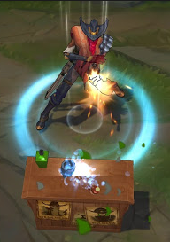
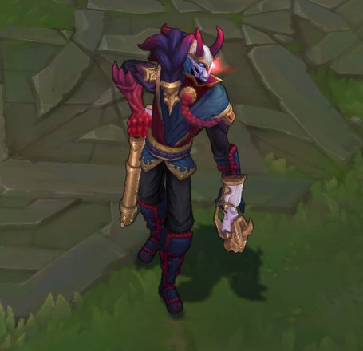
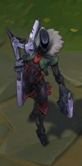
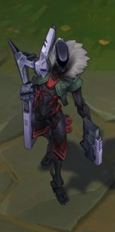

League of Legends: Jhin "The Virtuoso"
Jhin is a meticulous criminal psychopath who believes murder is art. Once an Ionian prisoner, but freed by shadowy elements within Ionia’s ruling council, the serial killer now works as their cabal's assassin. Using his gun as his paintbrush, Jhin creates works of artistic brutality, horrifying victims and onlookers. He gains a cruel pleasure from putting on his gruesome theater, making him the best choice to send the most powerful of messages: terror.
For years, Ionia’s southern mountains were plagued by the infamous “Golden Demon.” Throughout the province of Zhyun, a monster slaughtered scores of travelers and sometimes whole farmsteads, leaving behind twisted displays of corpses. Armed militias searched the forests, towns hired demon hunters, Wuju masters patrolled the roads - but nothing slowed the beast’s grisly work.
In desperation, the Council of Zhyun sent an envoy to beg Great Master Kusho for help. Upon hearing of the region’s plight, Kusho feigned an excuse for why he couldn’t help. But a week later, the master, his son Shen, and star apprentice Zed, disguised themselves as merchants and moved to the province. In secret, they visited the countless families emotionally shattered by the killings, dissected the horrific crime scenes, and looked for possible connections or patterns to the murders.
Their investigation took four long years, and left the three men changed. The famous red mane of Kusho turned white; Shen, known for his wit and humor, became somber; and Zed, the brightest star of Kusho’s temple, began to struggle with his studies. Upon finally finding a pattern to the killings, the Great Master is quoted as saying: “Good and evil are not truths. They are born from men and each sees the shades differently.”
Depicted in a variety of plays and epic poems, the capture of the “Golden Demon” would be the seventh and final great feat in the illustrious career of Lord Kusho. On the eve of the Blossom Festival in Jyom Pass, Kusho disguised himself as a renowned calligrapher to blend in with the other guest artists. Then he waited. Everyone had assumed only an evil spirit could commit these horrifying crimes, but Kusho had realized the killer was an ordinary man. The famed “Golden Demon” was actually a mere stagehand in Zhyun’s traveling theaters and opera houses working under the name Khada Jhin.
When they caught Jhin, young Zed marched forward to kill the cowering man, but Kusho held him back. Despite the horrors of Jhin’s actions, the legendary master decided the killer should be taken alive and left at Tuula Prison. Shen disagreed, but accepted the emotionless logic of his father’s judgment. Zed, disturbed and haunted by the murder scenes he had witnessed, was unable to understand or accept this mercy, and it is said a resentment began to bloom in his heart.
Though imprisoned in Tuula for many years, the polite and shy Khada Jhin revealed little of himself - even his real name remained a mystery. But while a prisoner, the monks noted he was a bright student who excelled in many subjects, including smithing, poetry, and dance. Regardless, the guards and monks could find nothing to cure him of his morbid fascinations.
Outside the prison, Ionia fell into turmoil as the Noxian empire’s invasion led to political instability. War awoke the tranquil nation’s appetite for bloodshed. The peace and balance Kusho had famously fought to protect was shattered from within as dark hearts rose in power and secret alliances competed for influence. Desperate to counter the power of the ninja and Wuju swordsmen, a cabal within the ruling council conspired to secretly free Jhin and turn him into a weapon of terror.
Now with access to the Kashuri armories’ new weapons, and nearly unlimited funds, the scale of Khada Jhin’s “performances” has grown. His work has brought fear to many foreign dignitaries and to Ionia’s secret political underground, but how long will a serial killer, craving attention, be satisfied working in the shadows?
Jhin Skins:
  
